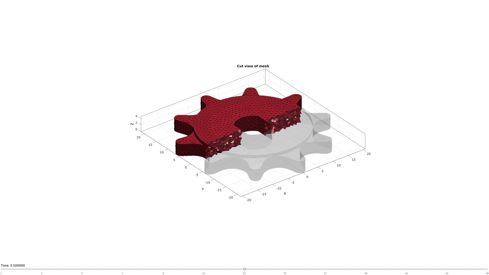
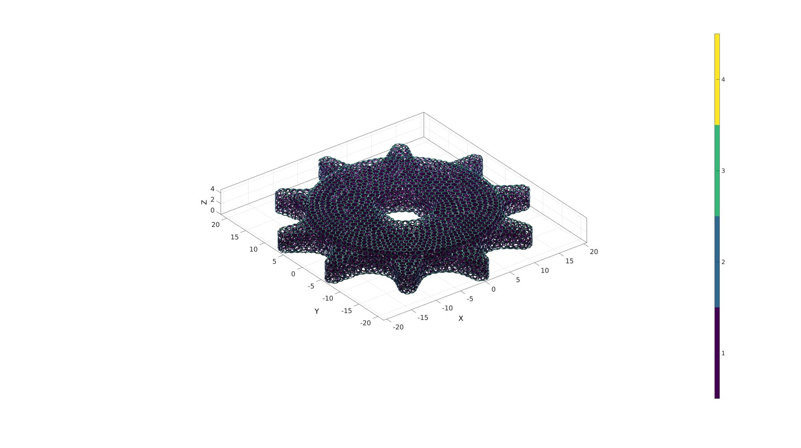
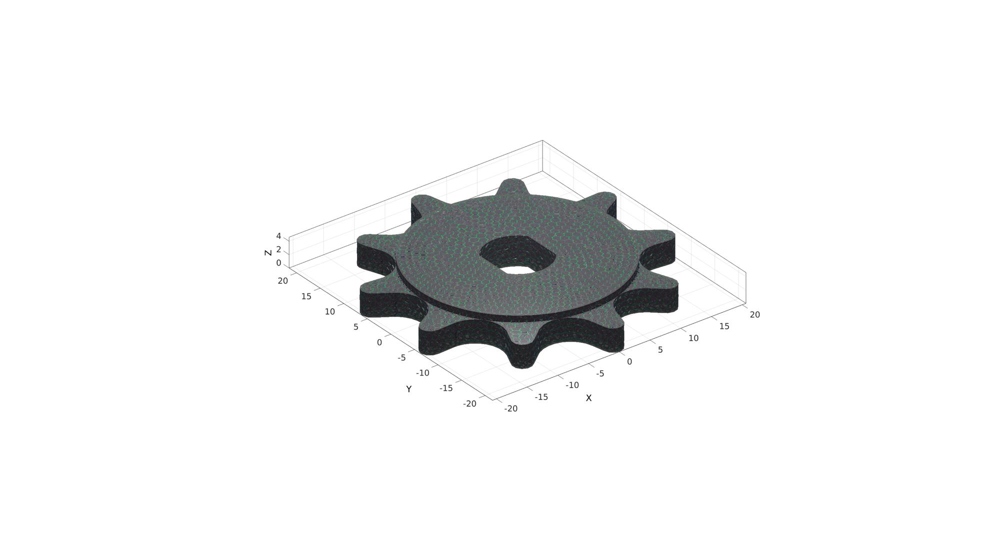
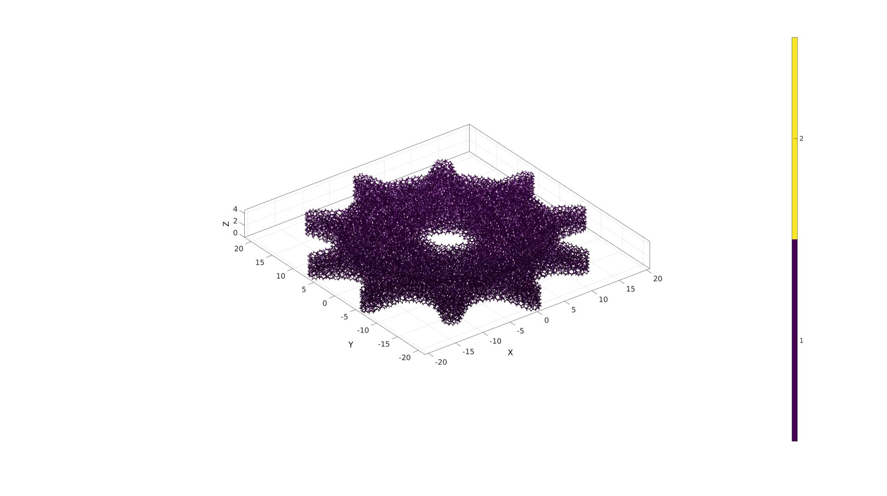

dualLattice
Below is a demonstration of the features of the dualLattice function
Contents
Syntax
[FT,VT,CT]=dualLattice(E,V,shrinkFactor,cladOpt);
Description
Work in progress
Examples
clear; close all; clc;
Example geometry
testCase=3; switch testCase case 1 %Box featureSize=0.5; pointSpacing=6; shrinkFactor=featureSize/pointSpacing; boxDim=[36 36 36]; %Width in each direction [meshStruct]=tetMeshBox(boxDim,pointSpacing); F=meshStruct.faces; V=meshStruct.nodes; C=meshStruct.boundaryMarker; case 2 %Bunny [F,V]=stanford_bunny('g'); C=ones(size(F,1),1); faceBoundaryMarker=ones(size(F,1),1); [V_regions]=getInnerPoint(F,V); V_holes=[]; [regionA]=tetVolMeanEst(F,V); %Volume for regular tets stringOpt='-pq1.2AaYQ'; inputStruct.stringOpt=stringOpt; inputStruct.Faces=fliplr(F); inputStruct.Nodes=V; inputStruct.holePoints=V_holes; inputStruct.faceBoundaryMarker=faceBoundaryMarker; %Face boundary markers inputStruct.regionPoints=V_regions; %region points inputStruct.regionA=regionA; inputStruct.minRegionMarker=2; %Minimum region marker [meshStruct]=runTetGen(inputStruct); %Run tetGen pointSpacing=mean(patchEdgeLengths(F,V)); featureSize=pointSpacing/15; shrinkFactor=featureSize/pointSpacing; case 3 %Sprocket defaultFolder = fileparts(fileparts(mfilename('fullpath'))); pathName=fullfile(defaultFolder,'data','libSurf'); dataStruct=load(fullfile(pathName,'sprocket.mat')); F=dataStruct.F; V=dataStruct.V; C=dataStruct.C; faceBoundaryMarker=ones(size(F,1),1); [V_regions]=getInnerPoint(F,V); V_holes=[]; [regionA]=tetVolMeanEst(F,V); %Volume for regular tets stringOpt='-pq1.2AaYQ'; inputStruct.stringOpt=stringOpt; inputStruct.Faces=fliplr(F); inputStruct.Nodes=V; inputStruct.holePoints=V_holes; inputStruct.faceBoundaryMarker=faceBoundaryMarker; %Face boundary markers inputStruct.regionPoints=V_regions; %region points inputStruct.regionA=regionA; inputStruct.minRegionMarker=2; %Minimum region marker [meshStruct]=runTetGen(inputStruct); %Run tetGen pointSpacing=mean(patchEdgeLengths(F,V)); featureSize=pointSpacing/10; shrinkFactor=featureSize/pointSpacing; case 4 defaultFolder = fileparts(fileparts(mfilename('fullpath'))); pathName=fullfile(defaultFolder,'data','libSurf'); dataStruct=load(fullfile(pathName,'enginePart_p1.mat')); F=dataStruct.F; V=dataStruct.V; C=dataStruct.C; faceBoundaryMarker=ones(size(F,1),1); [V_regions]=getInnerPoint(F,V); V_holes=[]; [regionA]=tetVolMeanEst(F,V); %Volume for regular tets stringOpt='-pq1.2AaYQ'; inputStruct.stringOpt=stringOpt; inputStruct.Faces=fliplr(F); inputStruct.Nodes=V; inputStruct.holePoints=V_holes; inputStruct.faceBoundaryMarker=faceBoundaryMarker; %Face boundary markers inputStruct.regionPoints=V_regions; %region points inputStruct.regionA=regionA; inputStruct.minRegionMarker=2; %Minimum region marker [meshStruct]=runTetGen(inputStruct); %Run tetGen pointSpacing=mean(patchEdgeLengths(F,V)); featureSize=pointSpacing/10; shrinkFactor=featureSize/pointSpacing; case 5 defaultFolder = fileparts(fileparts(mfilename('fullpath'))); pathName=fullfile(defaultFolder,'data','libSurf'); dataStruct=load(fullfile(pathName,'ConnectingRod.mat')); F=dataStruct.F; V=dataStruct.V; C=dataStruct.C; faceBoundaryMarker=ones(size(F,1),1); [V_regions]=getInnerPoint(F,V); V_holes=[]; [regionA]=tetVolMeanEst(F,V); %Volume for regular tets stringOpt='-pq1.2AaYQ'; inputStruct.stringOpt=stringOpt; inputStruct.Faces=fliplr(F); inputStruct.Nodes=V; inputStruct.holePoints=V_holes; inputStruct.faceBoundaryMarker=faceBoundaryMarker; %Face boundary markers inputStruct.regionPoints=V_regions; %region points inputStruct.regionA=regionA; inputStruct.minRegionMarker=2; %Minimum region marker [meshStruct]=runTetGen(inputStruct); %Run tetGen pointSpacing=mean(patchEdgeLengths(F,V)); featureSize=pointSpacing/10; shrinkFactor=featureSize/pointSpacing; end %%inputStruct.modelName=modelName; % Access mesh data E=meshStruct.elements; Fb=meshStruct.facesBoundary; V=meshStruct.nodes;
%%%%%%%%%%%%%%%%%%%%%%%%%%%%%%%%%%%%%%%%%%%%% --- TETGEN Tetrahedral meshing --- 20-Jun-2019 14:45:56 %%%%%%%%%%%%%%%%%%%%%%%%%%%%%%%%%%%%%%%%%%%%% --- Writing SMESH file --- 20-Jun-2019 14:45:56 ----> Adding node field ----> Adding facet field ----> Adding holes specification ----> Adding region specification --- Done --- 20-Jun-2019 14:45:56 --- Running TetGen to mesh input boundary--- 20-Jun-2019 14:45:56 Opening /mnt/data/MATLAB/GIBBON/data/temp/temp.smesh. --- Done --- 20-Jun-2019 14:45:57 %%%%%%%%%%%%%%%%%%%%%%%%%%%%%%%%%%%%%%%%%%%%% --- Importing TetGen files --- 20-Jun-2019 14:45:57 --- Done --- 20-Jun-2019 14:45:57
Visualize input geometry
meshView(meshStruct);
Example: Create a dual lattice mesh with outer surface cladding
See also: dualClad
cladOpt=1; [FT,VT,CT]=dualLattice(E,V,shrinkFactor,cladOpt);
Visualize results
cFigure; hold on; gpatch(FT,VT,CT,'none',1); % patchNormPlot(FT,VT); colormap(viridis(4)); icolorbar; camlight headlight; axisGeom; drawnow;
cFigure; hold on; hp1=gpatch(FT,VT,CT,'none',1); hp2=gpatch(F,V,'kw','none',0.8); % patchNormPlot(FT,VT); colormap(viridis(4)); %icolorbar; camlight headlight; axisGeom; drawnow;
Example: Create a dual lattice mesh without outer surface cladding
cladOpt=0; [FT,VT,CT]=dualLattice(E,V,shrinkFactor,cladOpt);
Visualize results
cFigure; hold on; gpatch(FT,VT,CT,'none',1); % patchNormPlot(FT,VT); camlight headlight; colormap(viridis(4)); icolorbar; axisGeom; drawnow;

GIBBON www.gibboncode.org
Kevin Mattheus Moerman, gibbon.toolbox@gmail.com
GIBBON footer text
License: https://github.com/gibbonCode/GIBBON/blob/master/LICENSE
GIBBON: The Geometry and Image-based Bioengineering add-On. A toolbox for image segmentation, image-based modeling, meshing, and finite element analysis.
Copyright (C) 2019 Kevin Mattheus Moerman
This program is free software: you can redistribute it and/or modify it under the terms of the GNU General Public License as published by the Free Software Foundation, either version 3 of the License, or (at your option) any later version.
This program is distributed in the hope that it will be useful, but WITHOUT ANY WARRANTY; without even the implied warranty of MERCHANTABILITY or FITNESS FOR A PARTICULAR PURPOSE. See the GNU General Public License for more details.
You should have received a copy of the GNU General Public License along with this program. If not, see http://www.gnu.org/licenses/.